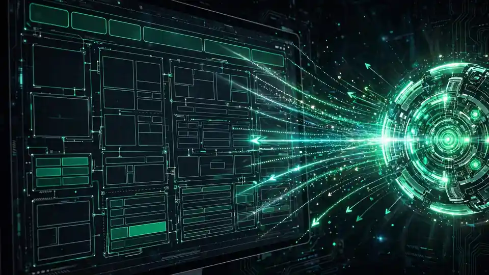

Pine AI built a cloud computer for AI agents — structure, not screenshots
Pine AI today introduced Pine Computer, a cloud computer built for AI agents, now in private beta. Instead of reading the web as pictures, it reads pages as structure — and posts the top checkpoint score on a 106-workflow business benchmark.
Pine AI today introduced Pine Computer, a cloud computer built for AI, now in private beta for developers. Through an SDK, a developer's product spins up a Pine Computer, hands it a job, and gets the finished work back — across websites, files and business software. The company announced it via PR Newswire today and launched on Product Hunt.
The core idea is a bet on the environment, not the model. Agents today work through computers designed for people: they look at a picture of the screen, work out what is on it, act, and look again. Pine Computer starts from the model instead. It reads a web page as structure — what is on it, what can be done with it, what just changed — rather than reconstructing it from a screenshot each time. Pictures stay for people, who can watch a live screen, take the controls and hand them back.
An event-driven machine
In practice, the agent is told the moment something changes instead of polling pages. Each Pine Computer runs sealed in its own sandbox, and the developer's keys stay with them. A live screen can sit inside the product so users step in when a task needs a human — sign-ins, approvals, edge cases — and then hand control back.
Developers who want to bring their own model can connect it too; Pine says that path works from screenshots today. Pine is also using the machine itself: its own assistant and enterprise work run on it, and in one enterprise deployment for audit automation, the company says a customer's team now takes on 50% more work with the same people. Andrew Mackenzie, co-founder of Subliminal, which evaluated Pine Computer, said Pine had "thought about all of this and built it all in."

The benchmark numbers
The interesting part is how Pine is backing the pitch: with a public benchmark instead of vibes. On UniPat AI's SaaS-Bench v1.1, a public benchmark of 106 business workflows across 23 applications, Pine Computer posts the highest checkpoint score in the publisher's table: 78.3%, against 74.3% for Opus 5 with Claude Code and 71.1% for GPT-5.6 Sol with Codex. It ran GPT-5.6 Luna, a lower-cost model, at about $1.02 per task in model cost, against $26.50 and $20.50 for those systems.
Read the fine print the way Pine writes it: a checkpoint score is the share of a task's checkpoints passed, not tasks finished. Pine Computer completed fewer whole tasks than those systems — 27.4%, against 31.1% and 29.2% — and these are comparisons between whole systems, each with its own software and budget, not a test of the computer alone. Pine's own preliminary internal tests put it at 2–5× faster than AI on conventional computers, though the company flags that results vary by task.
Why it matters
The agent-computer loop is emerging as the real bottleneck for agent reliability. Smarter models keep arriving, but most of them still spend a large share of their compute working around human interfaces — screenshots, polling, click-and-check. If the environment itself becomes event-driven and structured, the same model gets further per dollar: Pine's $1.02-per-task figure is the tell. The risk is the inverse of the pitch: a cheaper path to more checkpoint progress is only useful if whole-task reliability follows, and on that metric Pine trails the incumbents.
"We spent years making the model smarter. Now, we're making the computer worthy of the model," said Dylan Wang, Pine AI's co-founder and chief architect. Wang also said Pine plans to open its designs, implementations and specifications, and to work with others on what a computer built for AI should be — arguing the future of computing for AI should not belong to one company. More detail is in Pine's launch blog, and the company says the benchmark run data is published on Hugging Face.
Pine Computer is in private beta; developers can join the waitlist at pinecomputer.io. Pine's bet is that the next leap in agent usefulness comes not from a bigger model but from a machine that finally speaks the model's language. The benchmark tables give that bet its first public test — now it needs customers willing to run real work through it.